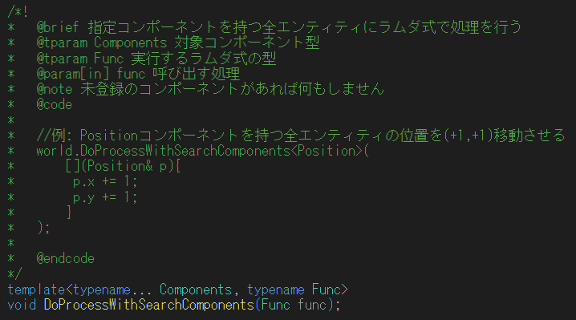
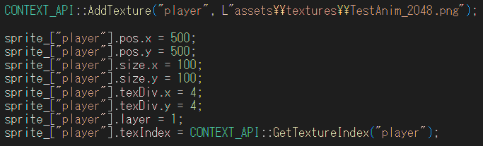
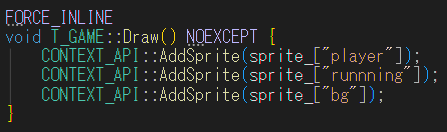
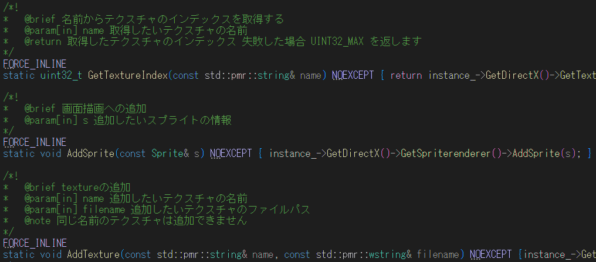
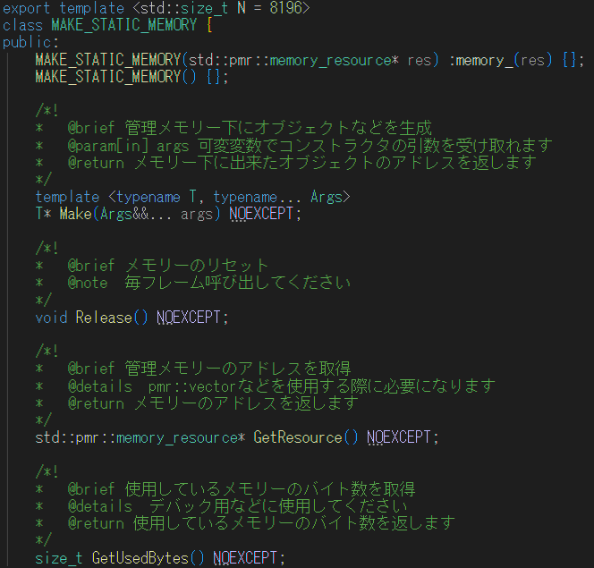
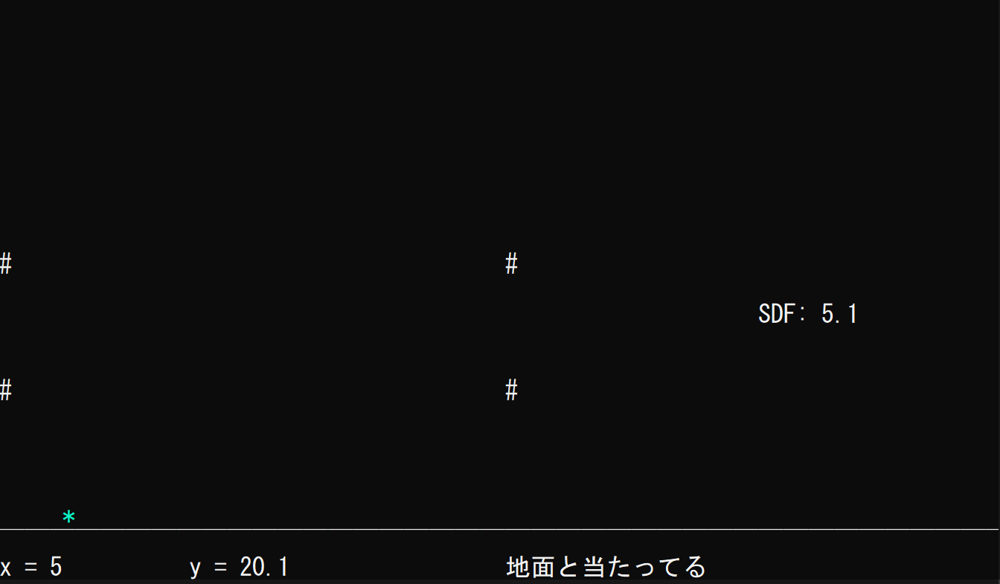
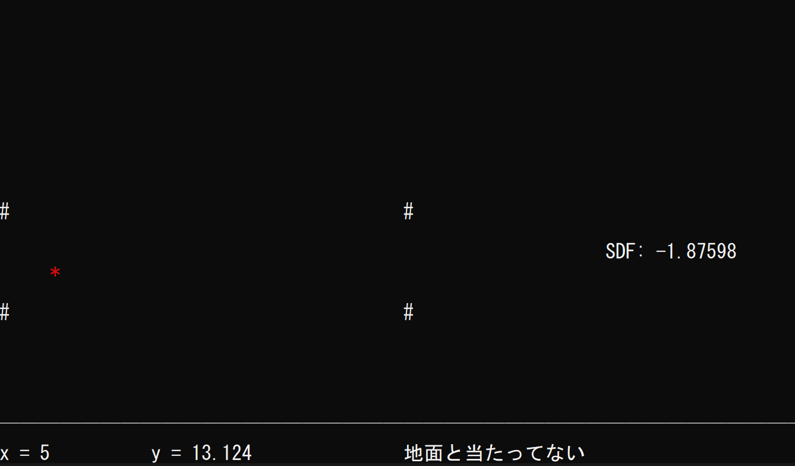
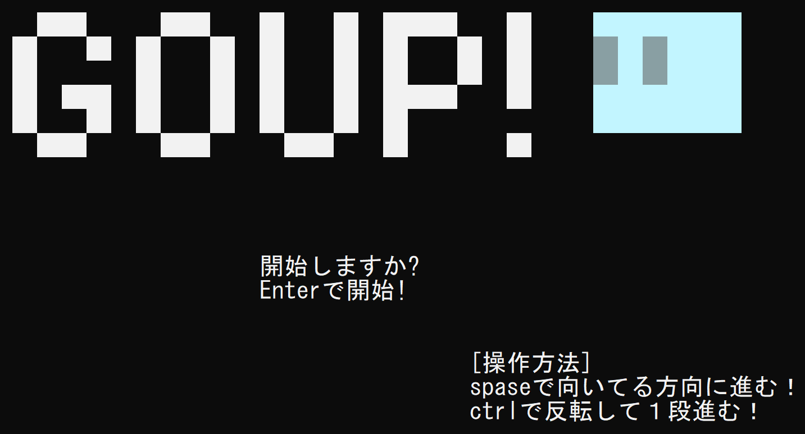
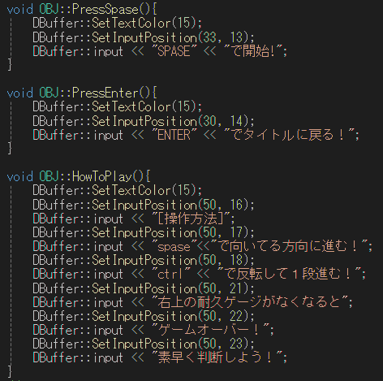

C++ / Modern C++
C++20 module、テンプレート、純粋仮想関数、型を意識したインターフェース設計に取り組んでいます。
Portfolio
C++による開発を継続して行い、SDF、データ指向設計、メモリ管理、SIMD最適化などを 実装と検証を通して学んでいます。拡張性や可読性を意識したフレームワーク設計にも取り組んでいます。
C++ソフトウェア開発 / 低レイヤー・設計学習中
About
C++によるソフトウェア開発を継続して行っています。 近年はSDF（Signed Distance Field）やデータ指向設計、メモリ管理、SIMD最適化などの技術に関心を持ち、 実装と検証を通じて理解を深めています。
将来的なチーム開発を意識し、拡張性や可読性を重視したフレームワークの設計にも取り組んでいます。 開発時には、Markdownを用いたドキュメント作成を行い、コードだけでなく設計意図や利用方法を共有しやすい環境づくりを意識しています。
新しい技術に触れた際は、単に利用するだけでなく、自ら実装しながら内部の仕組みを理解することを大切にしています。 課題に対して試行錯誤を繰り返し、より良い設計や実装方法を探究し続ける姿勢が強みです。
自分やチームが使いやすくなる小さなツールやライブラリを作ることが好きです。 よく使う処理を再利用しやすい形に整理し、他のコードから扱いやすいインターフェースとして提供できる設計を意識しています。
C++では、K&Rスタイル(カーネルスタイル)のシンプルで読みやすいコードが好きで、可読性を意識した実装を心掛けています。
コメントはDoxygen形式を意識し、.h は
公開APIの役割や使い方が分かりやすく伝わる構成を大切にしています。
Skills
C++20 module、テンプレート、純粋仮想関数、型を意識したインターフェース設計に取り組んでいます。
AVX/FMAを使ったSIMD処理、SDF、PMRを使ったメモリ管理、実測値による検証に取り組んでいます。
Archetype ECS、データ指向設計、Doxygenコメント、拡張性や可読性を意識したフレームワーク設計に取り組んでいます。
Works
複数のfloat配列に対する要素ごとの計算を、x = a * b + c のような式として書けるC++ライブラリです。
公開APIは simd.h にまとめ、実装は simd.cpp と内部ヘッダーへ分離しています。
rice::simd::Array が配列データを所有し、代入された式は rice::simd::Engine に遅延登録されます。
execute() 時に内部の実行計画へ変換してまとめて評価することで、読みやすい記述とSIMDによる高速化の両立を目指しています。
3年生で制作した、C++20 module形式のArchetype ECSです。 Entity、Component、Archetypeを分け、指定したコンポーネントを持つEntityへ ラムダ式で処理を行える仕組みを作りました。
コンポーネント構成は std::bitset のシグネチャで管理し、
型の組み合わせをビット列として見られるようにすることで、Archetypeの一致判定を理解しやすくしました。

2年生で制作した、Siv3Dのように扱いやすいAPIを目指したDirectX 11ベースの描画フレームワークです。
CONTEXT_API からテクスチャ追加やスプライト描画を呼び出せるようにしました。
描画ごとに重いDrawCallを発行するのではなく、スプライト情報を一度ためて、
最後に DrawInstanced でまとめて描画する設計に挑戦しています。

CONTEXT_API からテクスチャ登録とスプライト設定を行う使用例
AddSprite で描画対象を追加するだけにしています
2年生で制作した、C++20 module形式のメモリ管理ライブラリです。
import memory; で使える公開インターフェースを意識して、
オブジェクト生成、解放、使用バイト数の取得をまとめました。
std::pmr::memory_resource と組み合わせ、事前に確保したメモリ領域を使うことで、
生成コストを抑える設計に挑戦しています。コメントはDoxygen形式で整理しました。

1年生のときに制作した、SDF（Signed Distance Field）を使ったコンソール上の衝突判定デモです。 点や線分、四角形に対する距離を計算し、距離の符号によって内側・外側を判定する仕組みに挑戦しました。
プレイヤー位置とSDFの値を画面に表示し、四角形の内側に入ったときは色を変えることで、 数式で求めた距離が当たり判定に使えることを確認できるようにしています。


1年生のときに制作したC++コンソールゲームです。 純粋仮想関数を持つ基底クラスを作り、各処理を共通のインターフェースから呼び出す構成に挑戦しました。
Windows.h を利用側で直接扱わない制約の中で、描画のちらつきを抑えるための
ダブルバッファ機能を doublebuffer.h としてまとめました。
1年生時点の作品のためマジックナンバーが多く残っていますが、現在は定数化や責務分離を意識して改善しています。


DBuffer::input を使った描画処理Design Story
DirectXMathを使う中で、数値を毎回変換して関数へ渡す手間や、__m256 でVector3を扱うと余ったレーンが無駄になる点が気になったことから開発を始めました。
メモリを無駄にしない方法を考える中で、学習していたArchetype ECSから着想を得ました。 Vector3をそのまま並べるのではなく、x、y、zのように成分ごとの配列として持つSoA構造にすれば、SIMDでもデータを無駄なく扱いやすいと考えました。
途中ではExpression Templateで式を表現する設計も試しましたが、コンパイル時間の肥大化や管理コストが重くなり、扱いやすいものにはなりませんでした。
そこで、式をデータとして保持し、execute() 時に内部の実行計画へ変換してまとめて評価する現在の式APIへ変更しました。
Benchmark
SIMD-library を13th Gen Intel(R) Core(TM) i7-13650HX環境でRelease x64 / AVX2ビルドし、要素数1,048,576、繰り返し512回で5回測定した平均値です。
SIMDなしの通常ループを基準に、手書きSIMD、DirectXMath、式APIの速度を比較しています。
| 実装 | 時間 | 通常ループ比 |
|---|---|---|
| SIMDなしの通常ループ | 1639.74 ms | 1.00x |
| 手書きSIMD | 1361.97 ms | 1.20x |
| DirectXMath | 1368.45 ms | 1.20x |
| 式API | 1324.59 ms | 1.24x |
計算内容: x = a * b + c、y = a * b + d、z = a * b + e。
式APIで複数の計算式を読みやすく書きながら、DirectXMathに近い速度を目指しています。
| 実装 | 時間 | 通常ループ比 |
|---|---|---|
| SIMDなしの通常ループ | 2730.91 ms | 1.00x |
| 手書きSIMD | 2059.97 ms | 1.33x |
| DirectXMath | 1979.05 ms | 1.38x |
| 式API | 2075.40 ms | 1.32x |
計算内容: velocity += acceleration * dt、position += velocity * dt。
SoAで成分ごとにデータを持ち、Vector3相当の更新を無駄なく処理できるかを比較しています。
| 実装 | 時間 | 通常ループ比 |
|---|---|---|
| SIMDなしの通常ループ | 9461.91 ms | 1.00x |
| 手書きSIMD | 9099.17 ms | 1.04x |
| DirectXMath | 7968.35 ms | 1.19x |
| 式API（1つずつ実行） | 8022.61 ms | 1.18x |
| 式API（まとめて実行） | 6847.50 ms | 1.38x |
計算内容: out[i] = a * b + addend[i] を16出力分実行。
execute() をまとめることで、式APIの遅延実行設計がどれだけ効くかを確認しています。
| 実装 | 時間 | 通常ループ比 |
|---|---|---|
| SIMDなしの通常ループ | 848.97 ms | 1.00x |
| 手書きSIMD | 965.42 ms | 0.88x |
| DirectXMath | 852.63 ms | 1.00x |
| 式API | 876.58 ms | 0.97x |
計算内容: (a * b + c) * (d * e + f) + (a + d) * (b + e)。
乗算と加算が重なる複合式で、各実装の計算コストがどのように変化するかを比較しています。
Strength
Doxygenコメント、名前付け、.h をインターフェースとして読める構成を大切にしています。
C++20 module、ECS、SIMDなど、気になった技術を実際に手を動かして試すことが好きです。現在はJITにも興味があります。
とりあえず動くだけで終わらせず、使用するメモリ量や実行速度にも目を向けて実装することを意識しています。
Contact
制作物やコードについてご質問がありましたら、メールまたはGitHubからご連絡ください。